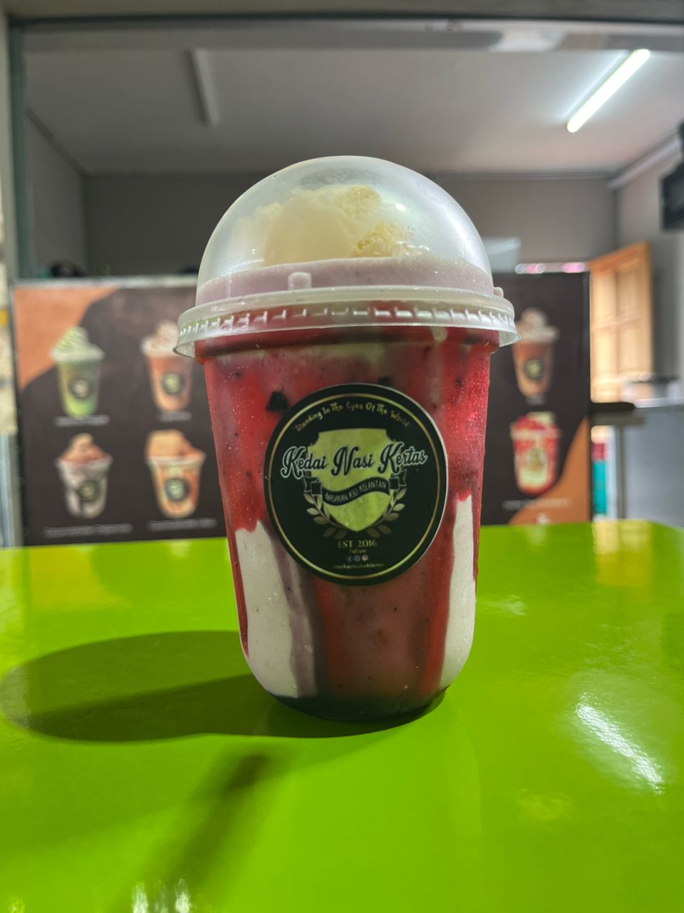
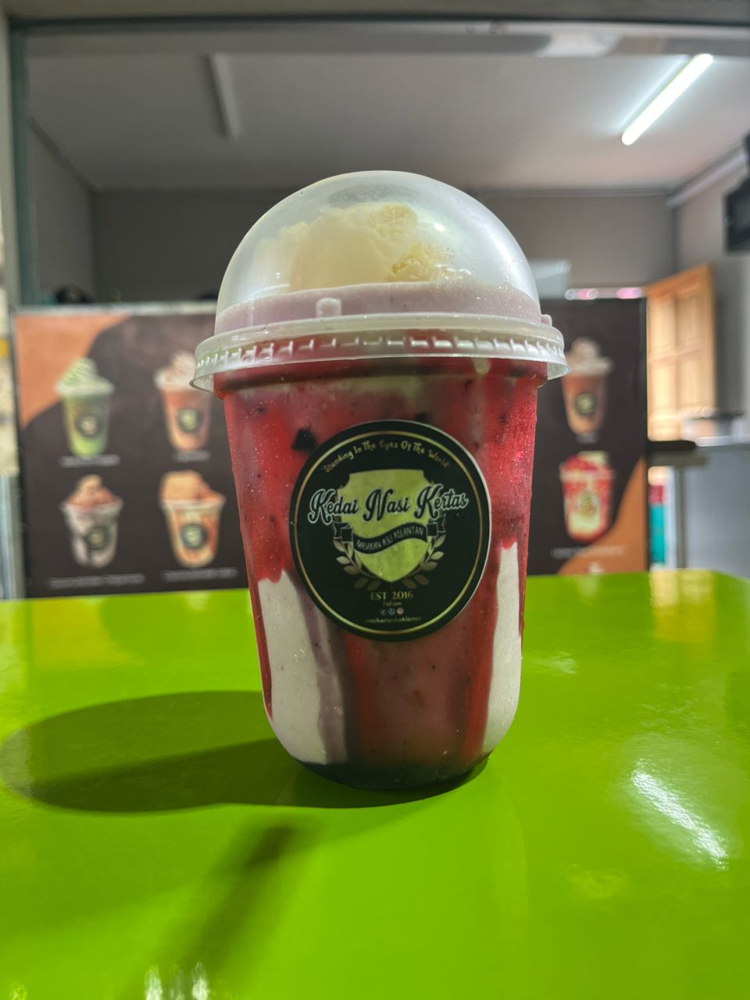
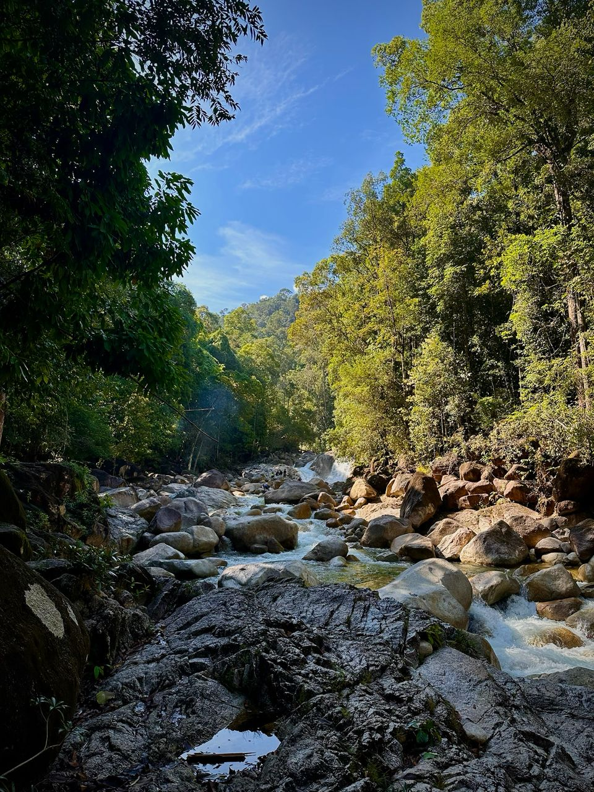
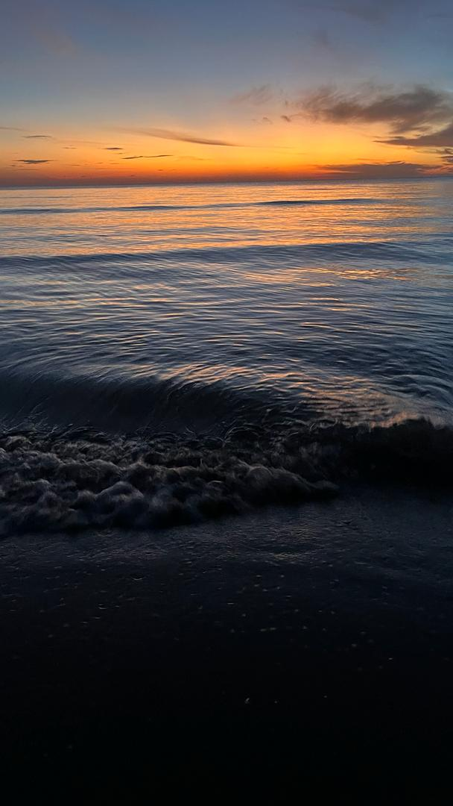
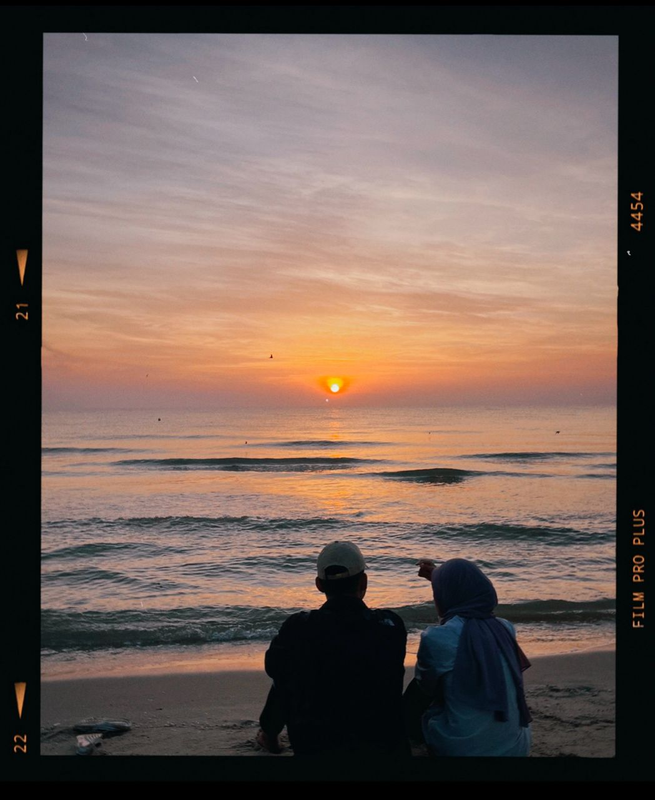
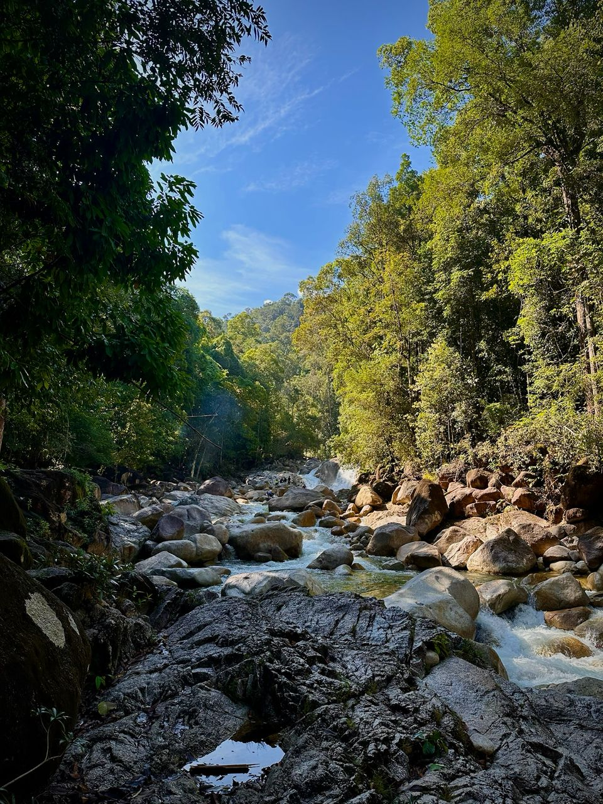
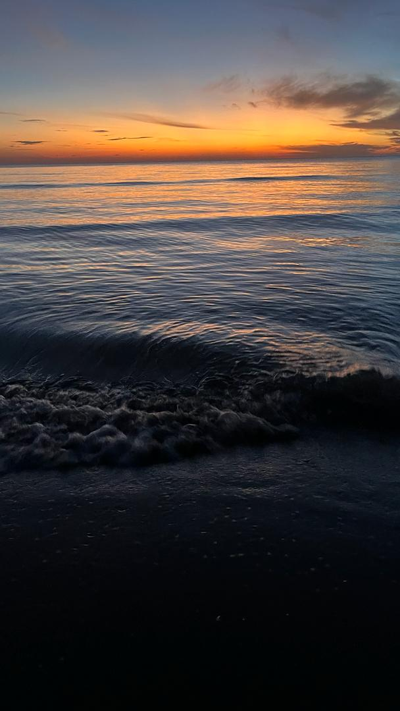
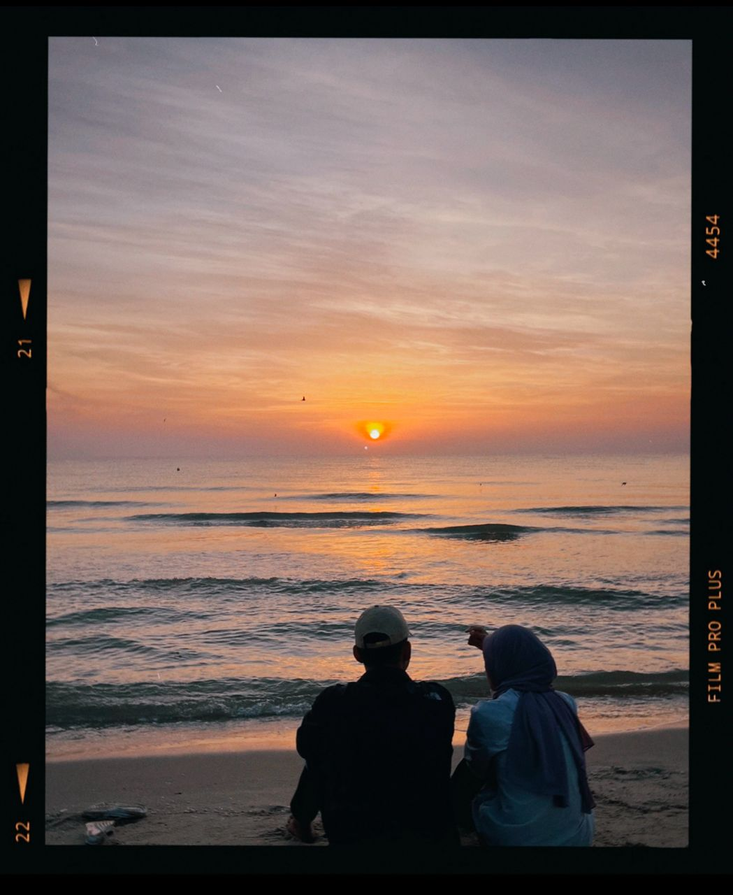

My Favourite
Things and hobbies I love the most.
Things and hobbies I love the most.
My favorite foods include Char kuew tiaw, sushi, takoyaki and buttermilk rice. I love trying new cuisines whenever I can with the right people.
I like listening to cheerful and relaxing music like 1991 songs while studying. It makes me calmer, especially when doing assignments.
 

I like coffee, fruit juice and herbal tea. Drinking them keeps me energized for strenuous activities like playing badminton.
Playing badminton is my main hobby. It keeps my mind active and allows me to build a healthy circle and make new friends.
 





Natural places like beaches, forests and mountains are my favorite places to relax and refresh my brain. It also helps me to have some me time.
Silat is my passion after badminton because it makes me more physically fit. It also tests my stamina when I sparring.
I like movies that give me creativity and excitement, my favorite genres are fantasy, adventure, and action, for example Narnia

Playing game like strategy and action games helps me relax and challenge my mind, for example Mobile Legends
I love classic cars and the design of modern supercars. Cars are a mix of art and engineering.